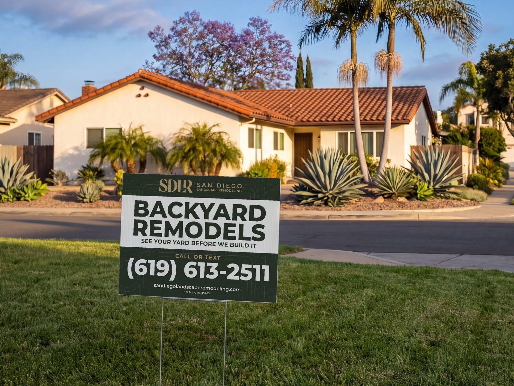
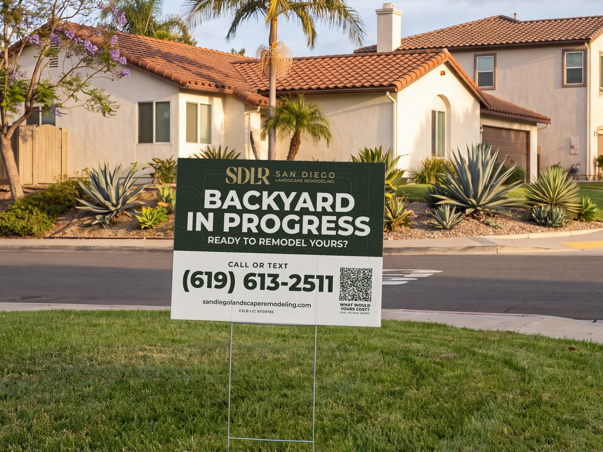
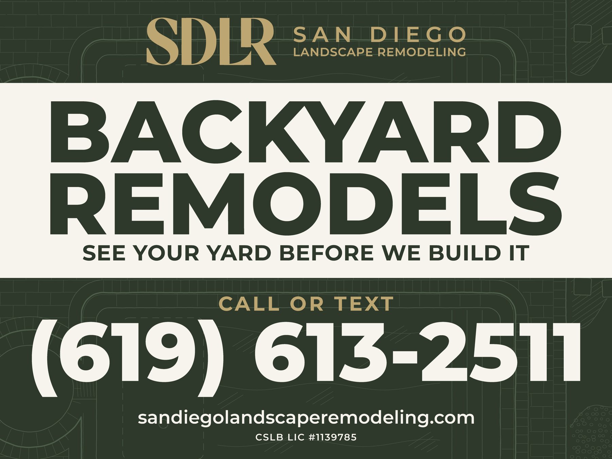
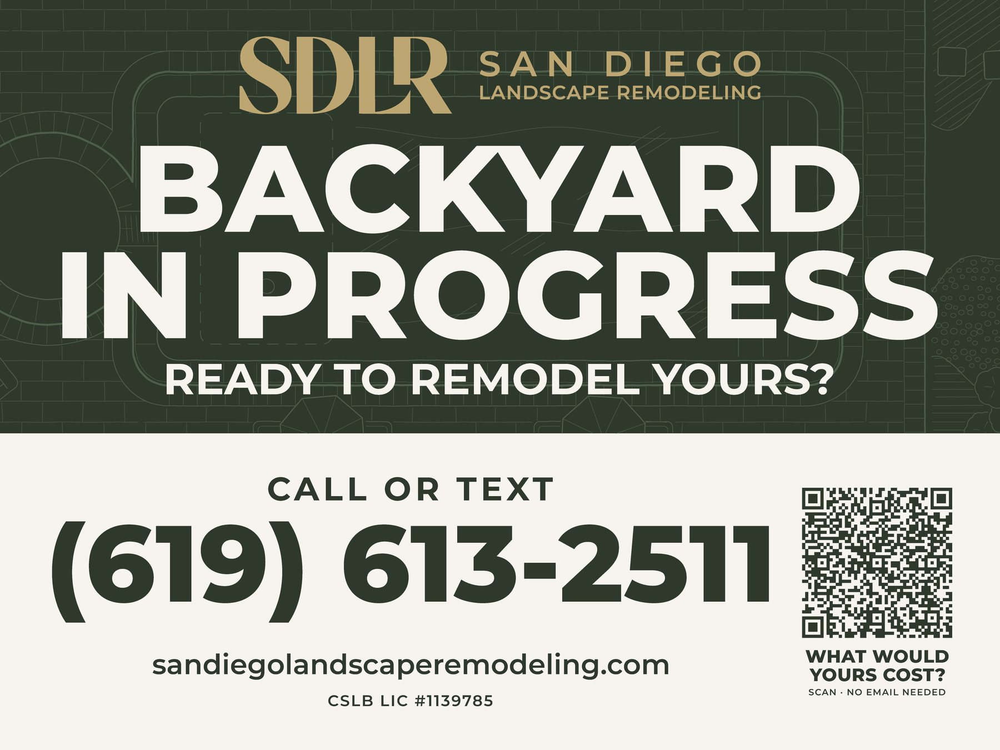
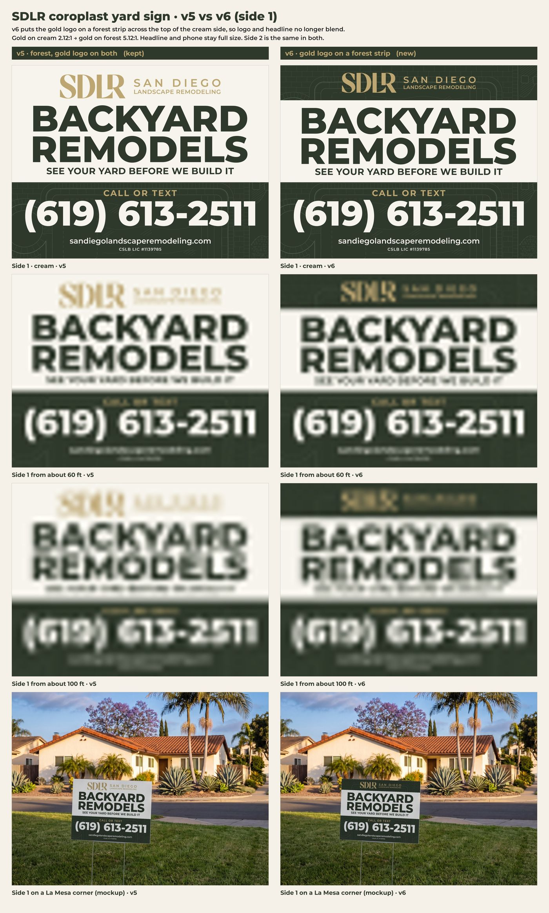
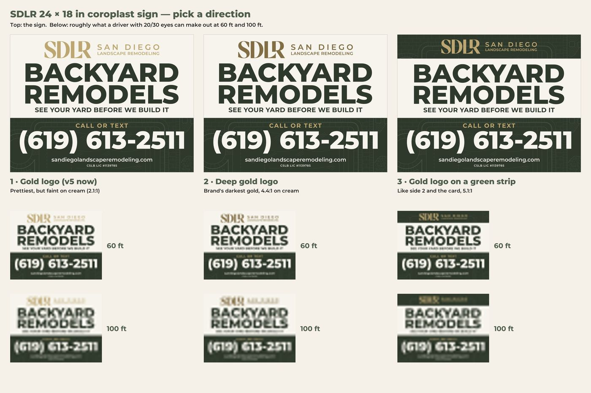
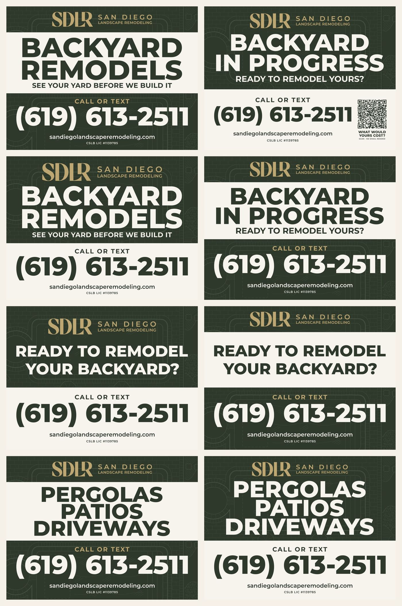

Side 1 now has a Forest strip across the top with the gold logo on it, then the green headline on cream, then the green phone band. The logo and the words no longer blend into one colour, and the sign matches side 2, the business card and the fence banner.
FinalApproved by Gio on November 22, 2026. This is the sign to print. Not ordered yet.


Mockups: each side on a wire H-stake on a San Diego corner.


Side 1 on the left, side 2 on the right. They print back to back on one board.



| Size | 24 in wide × 18 in tall, landscape. 4 mm corrugated plastic (coroplast), full colour, flutes vertical for a 10 × 24 in wire H-stake. |
| Sides | Double-sided, different art front and back: page 1 = side 1, page 2 = side 2, both upright. |
| Board | Ask for a blockout (light-block) board. Both sides are mostly dark green now and plain white board lets one side ghost through the other in backlight. |
| Files | PDF/X-4, CMYK, type outlined, no fonts. 24.25 × 18.25 in (⅛ in bleed) for most printers; 25 × 19 in (½ in bleed) for SignsOnTheCheap's designer. |
| Colours | Forest #2E382B (C71 M55 Y74 K59, same as the business card), gold #BDA572, cream #F5F1E8, site-plan lines sage #4E5D4A. Check the proof: Forest shouldn't go black, gold shouldn't go mustard. |
| QR | 3.6 in, opens the 60-second cost estimator (no email needed). Scans from about 3–4 ft, so it's for people walking past. |
| Licence | CSLB LIC #1139785 is on both sides. A yard sign counts as advertising, so it's required. |
24 × 18, 4 mm, double-sided with different art per side, wire H-stakes included, before tax. Checked November 21, 2026; nothing ordered. Different art per side costs the same as the same art on both sides.
| Printer | 10 | 25 | 50 |
|---|---|---|---|
| SignsOnTheCheap Pick | $107 | $215 ($8.60 ea) | $350 ($7.00 ea) |
| Vistaprint | $144 | $319 | $577 |
| BuildASign | $170 | $381 | $452 |
| SD Banner, downtown Local | $184 | $375 | $500 |
SignsOnTheCheap prices were sale prices; shipping shows only in the cart.
A plain-English summary from public city and county codes, not legal advice. The full research with sources is in Drive.
The layered Illustrator master (eight artboards, live type, global swatches), the per-side PDFs, 300 dpi JPGs and the README are in Drive under
02 Clients/san-diego-landscape-remodeling/assets/print-ready/yard-signs/2026-11-21-24x18-coroplast/print-files-v6/.